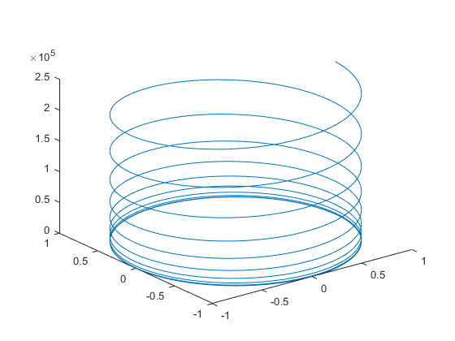
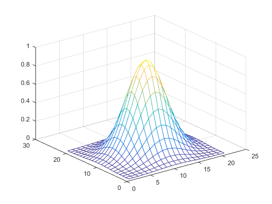
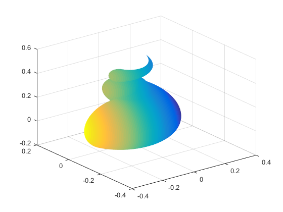
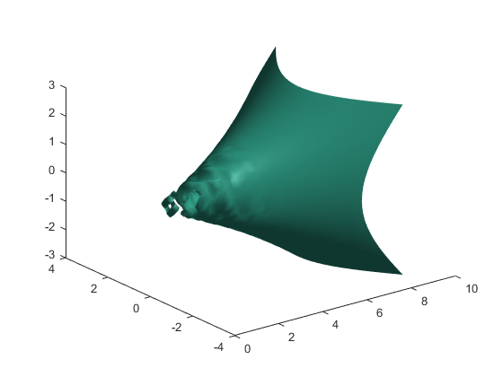
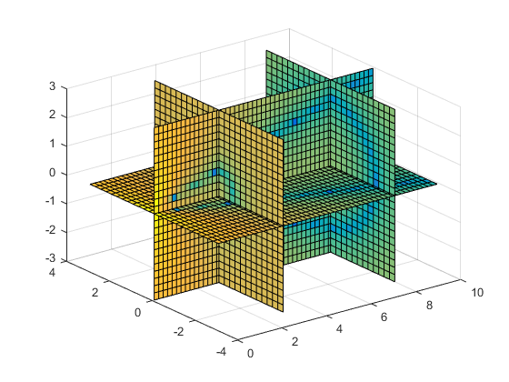
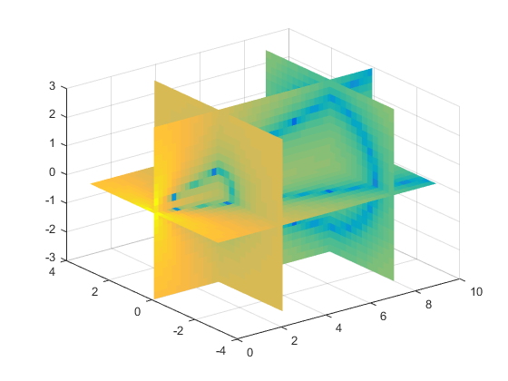
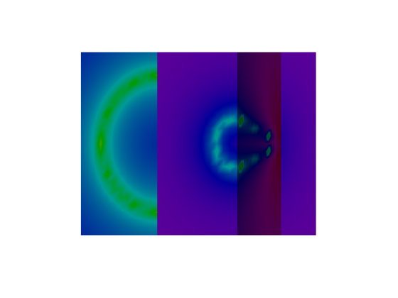

16 Three-Dimensional Graphics
Contents
16.1 Curve plots
t = .01:.01:20*pi ;
x = cos(t) ;
y = sin(t) ;
z = t.^3 ;
plot3(x, y, z)

16.2 Mesh and surface plots
xx = -2:.2:2 ;
yy = xx ;
[x, y] = meshgrid(xx, yy) ;
z = exp(-x.^2 - y.^2) ;
mesh(z)

16.3 Parametrically defined surfaces
figure(1) ; clf
t = linspace(0, 2*pi, 512) ;
[u,v] = meshgrid(t) ;
a = -0.2 ; b = .5 ; c = .1 ;
n = 2 ;
x = (a*(1-v/(2*pi)) .* (1+cos(u)) + c) .* cos(n*v) ;
y = (a*(1-v/(2*pi)) .* (1+cos(u)) + c) .* sin(n*v) ;
z = b*v/(2*pi) + a*(1-v/(2*pi)) .* sin(u) ;
surf(x,y,z,y-2*x)
shading interp

16.4 Volume and vector visualization
[x,y,z,v] = flow ;
figure(1) ; clf
isosurface(x, y, z, v, -3)
figure(2) ; clf
slice(x, y, z, v, [3 8], 0, 0)
 
16.5 Color shading and color profile
shading faceted
shading interp
shading flat

16.6 Perspective of view
axis off
axis equal
colormap(hsv(1024))
shading interp
material shiny
lighting gouraud
lightangle(80, -40)
lightangle(-90, 60)
view([-120 0])
